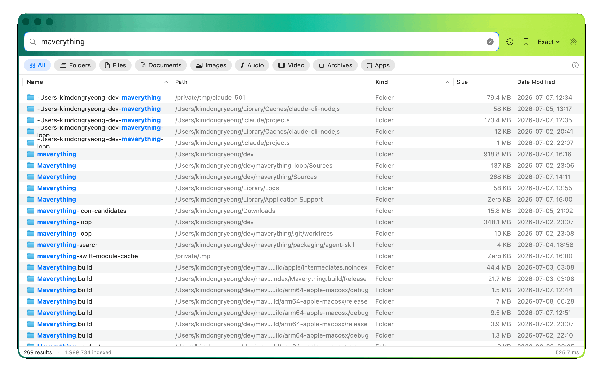
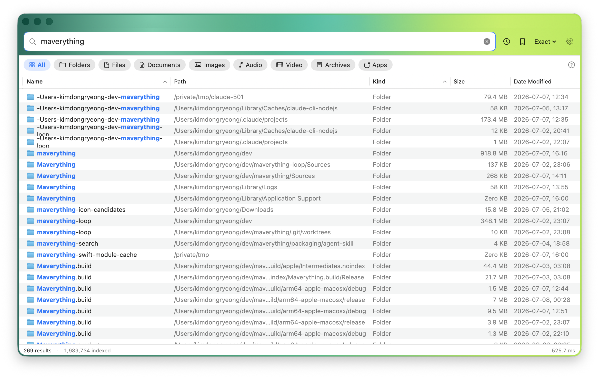
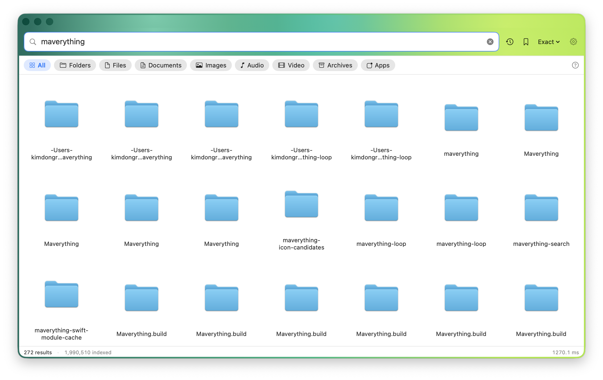
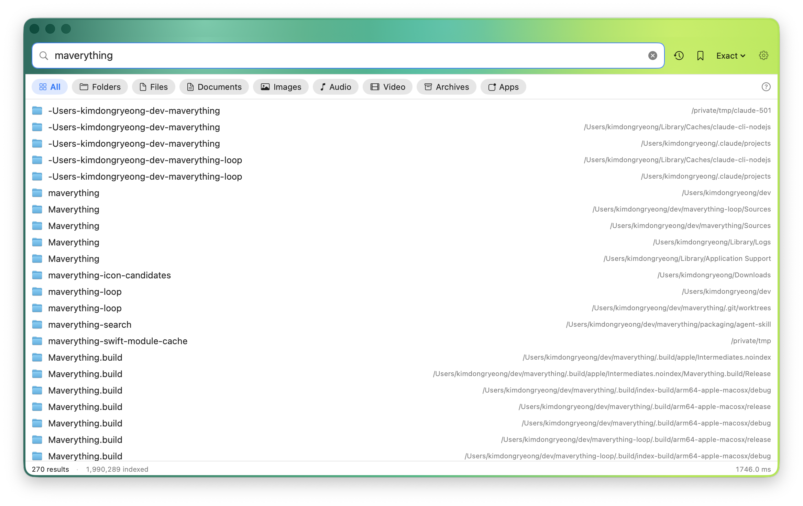
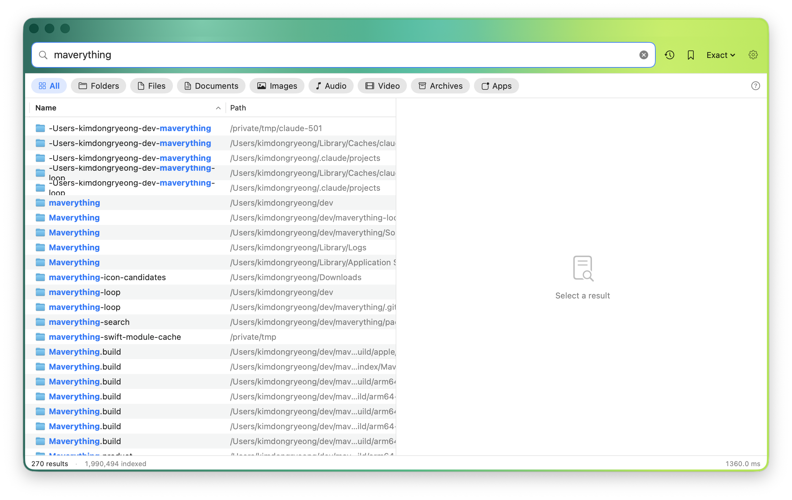

Everything-style instant file search for macOS. Search hidden files, system files, external volumes, and project trees as you type.
Mac + Everything
Maverything crawls the file system, keeps a flat in-memory index, persists a compressed snapshot, and resumes live updates with FSEvents. The result is a tool built for constant use: type, narrow, sort, open, reveal, rename, preview, repeat.

Use `ext:`, `size:`, `dm:`, `folder:`, `file:`, `path:`, `tag:`, `content:`, quoted phrases, OR, and negation.
Quick Look, rename, Move to Trash, Reveal in Finder, Get Info, tags, CSV export, and drag files out of results.
External drives are indexed on mount and removed on unmount. Network folders can be added with scheduled rescans.
Files you open often or recently can float to the top, similar to Everything's Run Count behavior.
A compressed snapshot avoids a cold crawl on every launch while FSEvents catches up with live changes.
The app can check GitHub Releases and open the newest DMG without adding a dependency.
Visual tour
Dense table scanning, a compact launcher, a two-pane preview, and an icon grid for visual browsing.




CLI and agents
`mvfind` queries the running app over a Unix socket and falls back to the saved snapshot. `mv-mcp` exposes the same index to MCP-compatible AI assistants, so an agent can search your Mac without crawling it.
Trust boundary
Maverything is GPL-3.0, has no telemetry, no analytics SDK, and no cloud sync. The normal name-search index stays on your machine. Update checks request only GitHub Releases metadata.
| Topic | Behavior |
|---|---|
| Index | ~/Library/Application Support/Maverything/ |
| Network | Only explicit GitHub update checks |
| Diagnostics | Off by default, opt-in with MV_DIAG=1 |
| License | GPL-3.0 |
Download
Download the DMG, drag the app to Applications, grant Full Disk Access for complete results, and reindex. Early builds may require right-click > Open until Developer ID notarization is complete.